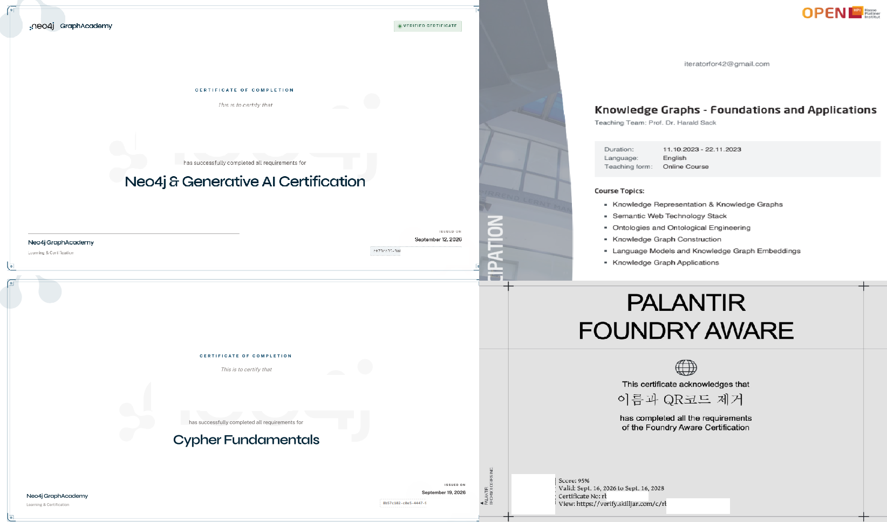
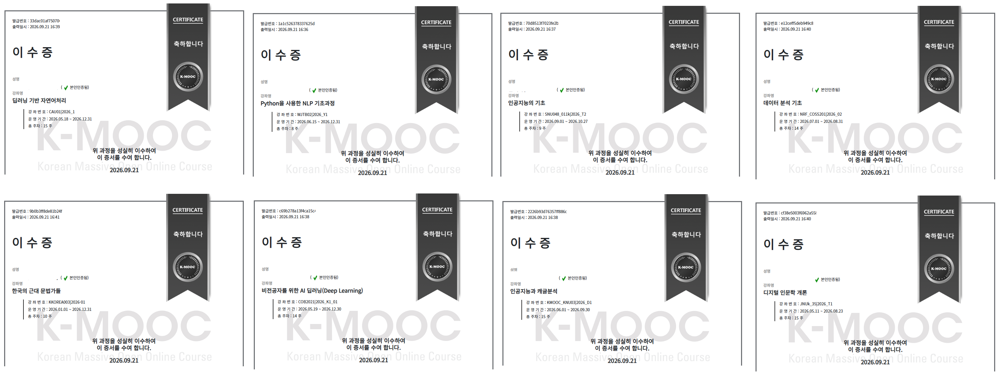

이수 내역 · 2023 ~ 2026
온톨로지·지식그래프 관련 이수 4건

- Neo4j & Generative AI Certification Neo4j GraphAcademy
- Knowledge Graphs - Foundations and Applications OPEN
- Cypher Fundamentals Neo4j GraphAcademy
- PALANTIR FOUNDRY AWARE Palantir
지원자 학습 기록
자기소개서와 연구계획서에 담은 내용을 개인식별정보를 모두 제거한 뒤 이 페이지를 통해 공개합니다. 자기소개서에서 언급한 도서와 책 페이지의 캡처, 이수증(일부 웹에 공개된 자격증 포함)을 올립니다. 제가 나온 인터뷰 기사는 원문을 갖고 있으며, AI를 이용해 한국어로 번역했습니다.
이수 내역 · 2023 ~ 2026

K-MOOC 이수증 · 2026.09.21 출력

2026.09 작성
![『디지털 인문학 입문』 396쪽, 1주차 교육과정 표[이거 사진 크기 줄여야 함]](images/20260818_165042.jpg)
자기소개서에 언급한 도서 내용 캡처.